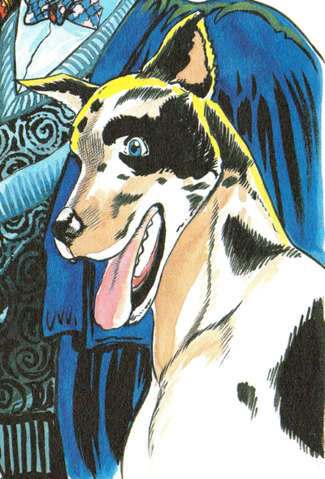

Introduction

This is the first part of the JoJo Bizarre Adventure which was serializedin Weekly Shonen Jump from 1986 to 1987. This part recieve 2 anime adaptions and a 2006 PlayStation 2 game.
Plot
"Put simply, the theme of this work is 'living'. Through the two main characters, I want to examine two ways of living. It's all about singing the hymn of the battle between human and non-human", By Hirohiko Araki, author's note, VOL. 1.
During the 12th to the 16th centuries an Aztec chieftain having to wear a Stone Mask stains of young women blood, as part of the Aztec tribe's human sacrifice. This will result in the mask to spites to sprount from the mask which will pierce the man's skull. The man would gained eternal life, the power to drain blood with fingers and superhuman strenght but the mask was forgotten and lost in time until it was found in Aztec ruins led by a team which ended in a troubling event in the mid to late 19th century. The mask was found eventually and landed in a possession of an English aristocrat then Mary Joestar who had purchased it and after her death, it was retrieved by her husband George Joestar I.
Taking place in 1880, England, Jonathan Joestar known as JoJo lives peacefully with his father George Joestar I in a massive mansion. The days of peace is forever changed when a young boy from London, named Dio Brando would be adopted to the Joestar family due to his father Dario Brando's death. An accident in which resulted in Mary Joestar death, Dario Brando attempting to loot the corpses but the good nature of George Joestar I believe he and his infant son were rescued by Dario.
The story would unfolds as Jonathan and Dio engage in a series of intense battles between each other. The friends and love ones along the way they made will have a impact on the event between Dio and Jonathan. The help will Involving mysterious powers,supernatural ablitities,vampires, and the anciet mask. The Phantom Blood forever change the future generations of the Joestar Bloodline.
Jonathan Joestar is characterized as a noble, honrable, and kind-hearted individual.
Dio Brando is cunning, ambitious, and malevolent. You could say, he is quite the opposite of Jonathan Joestar.
Major Characters
Jonathan Joestar


Dio Brando
George Joestar I
Mary Joestar
Danny
Will A. Zeppeli

Robert E. O. Speedwagon
Erina Pendleton
Mask
My favorite references
There are many but I will choose the ones I love the most

Studies of Teri Toye,"Body Conscious" New York, 1963 M: Teri Toye A: Tony Viramontes

Dio Brando

Valentino Haute Counture 1983 A: Tony Viramontes